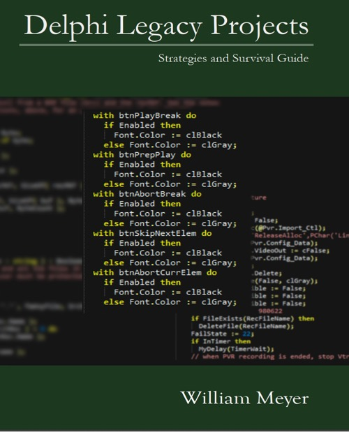

Delphi Legacy Projects : Strategies and Survival Guide
Writed by : William Meyer
Published date : 02/06/2022
ISBN-13 : 9798833375693
Language :  English
English
Web site : https://wmeyer.tech/books/
About Delphi Legacy Projects : Strategies and Survival Guide
Delphi has been in wide use for over 25 years, and there are many legacy projects which are still in active production. This volume offers approaches to refactoring and modernizing the code base without the need for complete redesign and rewrite. Evolution, not revolution. These are approaches well suited to the incremental revision of production code, as is usually the concern with a commercial product.
Where to buy ?
This book has the ISBN13 "9798833375693".
If it is still available for sale, you can order it in your favorite bookstore, by its publisher or online at
Amazon CA,
Amazon FR,
Amazon JP,
Amazon UK or
Amazon USA depending on your country.
Table of content
Contents
Preface
1 Frame of Reference
1.1 Your Current Practice
1.2 More Thoughtful Coding
2 Introducing the Problem
2.1 Purpose and Perspective
2.2 Areas of Difficulty
2.2.1 Evolution, not Revolution
2.3 We May Be the Enemy
2.3.1 Too Many Components?
2.3.2 Abusing the Search Path
2.3.3 Coding Too Soon?
2.3.4 Inheritance
2.3.5 Excessive Coupling
2.3.6 Unit Dependency Cycles
2.4 The IDE, Again
3 Strategies
3.1 Philosophy and Reality
3.2 Setting Goals
3.2.1 Patience
3.3 Select Your Components
3.4 Pre-convert, if Necessary
3.5 Isolate Your Code
3.6 Achieving a Build
3.7 Module Inclusion
3.8 Separating Projects - How and Why
3.8.1 Multiple Projects in One Delphi Version
3.8.2 Multiple Projects in Multiple Delphi Versions
3.9 Start Small
3.10 Incremental Change
3.11 Strip Deadwood
4 Beginning
4.1 The IDE
4.2 The Build Process
4.2.1 Build Management
4.2.2 Accept Compiler Advice
4.3 Data and Code
4.3.1 Scope of Data
4.3.2 Writeable “Constants”
4.4 Scope in General
4.4.1 Forms vs. Units
4.4.2 Proper to Forms
4.4.3 Proper to Class Units
4.4.4 Proper to Data Modules
4.4.5 Everything Private!
4.4.6 Global not Always Bad
4.4.7 Partitioning
4.5 Exception Handling
4.5.1 A Simple Example
4.5.2 Exceptional Failures
4.5.3 Exceptional Confusion
4.5.4 Scope of Exception Handlers
4.5.5 Default Exception Handlers
4.6 Code Formatting
4.6.1 Formatting Matters
4.6.2 Manageable Formatting
4.6.3 Minor Formatting
Digging Into the Challenges
5 Comments
5.1 Useless Comments
5.2 Annoying Comments
5.3 Thoughtless Comments
5.4 Essential Comments
6 Cleaning Uses Clauses
6.1 Initialization
6.1.1 Independent Factors
6.1.2 Initialization of Units
6.2 Removing Dead and Duplicate Units
6.2.1 ProjectFiles Tool
6.2.2 Other Useful Tools
6.3 Removing and Demoting Unit References
6.4 Using the Tools
6.5 Unit Dependency Cycles
6.6 Collecting the UDCs
7 Simple Things
7.1 Structural Changes in Delphi
7.2 Hints and Warnings
7.3 Types and Constants
7.3.1 No Magic Numbers
7.3.2 Unicode?
7.3.3 Numeric Type Aliases
7.3.4 Global can be OK
7.3.5 Assignment Compatibility
7.3.6 Use Enumerations
7.3.7 Use Sets
7.3.8 Use Defined Ranges
7.4 Variables and Scope
7.4.1 Avoid Global Variables
7.4.2 Using AOwner
7.5 Forms
7.5.1 Form Variables
7.5.2 Form File Format
7.6 Delphi Versions
8 Not so Simple Things
8.1 Persistence in Settings
8.1.1 Persistence with Enumerations
8.2 Dangers in Use of ClassName
8.2.1 Decoupling with a Dictionary
8.3 Reviewing Code
9 Cleaning Legacy Code
9.1 Local Variables
9.1.1 I/O Checking
9.1.2 Overflow Checking
9.1.3 Range Checking
9.1.4 Rename Local Variables
9.1.5 Remove Local Variables
9.2 Remove Wrappers
9.3 Coding Style
9.4 Form State
9.4.1 Form State Components
9.5 Form vs. Code Dependency
9.6 Types & Consts Again
9.6.1 Doppelgangers
9.7 Misplaced Routines
10 Local Components
10.1 Component Basics
10.2 Managing Components
10.3 Component Pitfalls
10.3.1 Components Doing Too Much
10.3.2 Bad Assumptions
10.3.3 Failing to Handle Exceptions
10.3.4 Mixing Component and Application Code
10.4 Cleaning House
10.4.1 Use Library Modules
10.4.2 Keep the interface uses Clause Small
10.4.3 Refactor Utility Units
11 Refactoring
11.1 A Workable Approach to Small Change
11.2 The Value of a Data Module
11.3 Testing in a Data Module
11.3.1 Information Hiding
11.3.2 Minimizing Points of Contact
11.4 The Challenge of Testing
11.4.1 Massive Routines
11.4.2 Massive Coupling
11.4.3 Risk is Unavoidable
11.5 Code for the Maintainer
11.5.1 Resources
11.6 Prefer Library Code
11.7 Use Nested Routines
11.8 Extract Classes
11.9 Prefer Composition
11.9.1 The Public Interface
11.9.2 The Private Behaviors
11.9.3 Notes on Implementation
12 Removing Code from Forms
12.1 Extract Utility Routines
12.1.1 Refactoring Praxis
12.2 Building Utility Units
12.3 Shared Classes
12.4 Use Data Modules
12.4.1 Common Operations
12.5 Separate Business Logic
12.5.1 What is Business Logic?
12.5.2 Organization
12.5.3 Separate Data Handling
13 Fixing Erroneous Coding
13.1 Errors of Function
13.2 Reduce Noise
13.3 Reduce Logic
13.3.1 Using Partial Products
13.3.2 Prefer Positive Logic
13.4 Loop Forms
13.5 Minimize Tests
13.6 Use Arrays
13.6.1 Static Arrays
13.6.2 Dynamic Arrays
13.6.3 Open Arrays
13.6.4 Generic Arrays
13.6.5 Constant Arrays
13.6.6 Arrays vs. Cases
13.7 Summary
14 Class and Record Helpers
14.1 Alternative Approaches
14.2 TStringHelper
14.3 Legacy Cleanup
14.4 More Insights
15 Using Datasets Well
15.1 TField Properties
15.2 Component Differences
15.3 Normalize Data
15.4 Less Specificity
15.5 Think Before Coding
16 Pragmatism
16.1 Assessing the Costs
16.2 Measuring Value
16.2.1 Use EurekaLog
16.2.2 Use Analytics
16.3 Missing Source Code
16.4 Analytical Modules
16.5 Little-Used Modules
17 Interfaces
17.1 History
17.2 Reducing Scope
17.2.1 Constants and Types
17.2.2 Properties
17.3 Managing Memory
17.4 Examples
17.5 Going Deeper
17.5.1 Variations
18 Testability
18.1 Testing Legacy Code
18.2 Layers of Difficulty
18.3 Design Specifications
18.4 Interdependency Issues
18.5 Coupling, Partitioning
18.6 Code on Forms
18.7 Testability Defined
18.8 Ensure Testability
18.9 Unit Test Frameworks
18.10 Testing Practices
19 Performance
19.1 Realities
19.1.1 Profiling
19.1.2 Profiling Legacy Code
19.1.3 Approaching Profiling
19.2 Painful Realities
19.3 You Need Tools
20 Disruptive Forces
20.1 Code Details
20.1.1 Hints and Warnings
20.1.2 Static Analysis
20.2 Component Issues
20.2.1 Orphaned Components
20.2.2 Local Components
20.3 Dependency Cycles
20.3.1 The Gordian Knot
20.3.2 Small Steps
20.3.3 Larger Steps
20.3.4 Cycles in Components
20.4 Compiler Versions
20.5 Issues You must Find
Best Practices
21 Some Simple Principles
21.1 Principle of Least Astonishment
21.2 DRY: Don’t Repeat Yourself
21.2.1 The Rule of Three
21.2.2 Causes of Repetition
21.2.3 Using the Libraries
21.2.4 String Utilities
21.2.5 Date and Time Utilities
21.3 YAGNI: You Ain’t Gonna Need It
21.4 SOC: Separation of Concerns
22 SOLID
22.1 What is SOLID?
22.1.1 Single Responsibility
22.1.2 Open/Closed
22.1.3 Liskov Substitution
22.1.4 Interface Segregation Principle
22.1.5 Dependency Inversion
23 Inheritance, Aggregation, Composition
23.1 Inheritance
23.2 Composition
23.3 Aggregation
24 Design Patterns
24.1 Anti-patterns
24.2 Delphi Idioms
24.2.1 Create/Destroy
24.2.2 If/Else
24.2.3 Helpers
24.2.4 Smart Pointers
24.3 Recommended Practices
24.4 Patterns of Interest
24.4.1 Adapter Pattern
24.4.2 Facade Pattern
24.4.3 Dependency Injection
24.5 Summary
25 Dependency Injection
25.1 Starting Small
25.2 Types of Injection
25.2.1 Constructor Injection
25.2.2 Property Injection
25.2.3 Method Injection
25.3 Summary
26 Unit Testing
26.1 DUnit
26.2 DUnit2
26.3 DUnitX
26.4 TestInsight
26.5 Delphi Mocks
Appendix: Tools
27 Tools Overview
27.1 IDE Plug-ins
27.2 Standalone
27.3 Some Disclaimers
28 CnPack
28.1 Structural Highlighting
28.2 Tab Order
28.3 Uses Cleaner
28.4 CnPack Summary
29 CodeSite
29.1 Details in Your Hands
29.2 Data from the Field
29.3 Simple Example
30 Delphi Mocks
30.1 Delphi Mocks in Use
30.2 Why Mock?
30.3 When to Mock
30.4 Summary
31 Documentation Insight
32 Delphi Unit Dependency Scanner
33 DUNIT
33.1 DUnit in Recent IDEs
33.2 Developing Test Cases
33.3 Start with the Familiar
33.4 Coverage in Legacy Projects
33.5 Test Driven Development
33.6 Unit Test Lifetime
33.7 Summary
34 DUnit2
35 DUnitX
35.1 Looking at Some Code
35.1.1 DUnit vs. DUnitX Features
35.2 DUnit vs. DUnitX
35.3 Summary
36 FixInsight
36.1 Real World Data
37 GExperts
37.1 Configuration
37.2 Editor Experts
37.3 Replace Components
37.4 GREP Search
37.5 GExperts Summary
38 Homebrew Tools
38.1 Cycles Analyzer
38.1.1 Cycles Analyzer Code
38.1.2 Dependency Cycles in Components
38.1.3 Unit Dependencies: A Closer View
38.2 Map Explorer
38.3 Component Collector
38.3.1 Collecting Installed Components
38.3.2 Collecting the DFM Files List
38.3.3 Collect Component Instances
38.3.4 Producing the Aggregate Component Data
38.3.5 Putting Together the Pieces
38.4 Separating Wheat and Chaff
39 MapFileStats
40 MMX
40.1 Add Class
40.2 Add Field
40.3 Add Method
40.4 Sort Class
40.5 Synchronize Signatures
40.6 Swap Scopes
40.7 Unit Dependency Analyzer
40.8 Summary
41 Peganza Products
41.1 Overview
41.2 Pascal Analyzer
41.3 Pascal Expert
41.4 Pascal Browser
42 ProDelphi
42.1 Profiling Some Demo Code
42.1.1 Considering ExportDataSetToCSV
42.2 Profiling, in General
42.2.1 Why Profile, Why Optimize?
43 TestInsight
Bibliography
Alphabetical Index